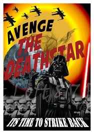

They taught you that the Empire only made the galaxy worse. Well that was not true, for a fact. The empire did many good things that NO ONE will talk about. You don’t believe me? Well, I will list a few. One thing was that the Senate and Jedi were corrupt (see here). The Empire came to power and got rid of them, restoring order and stability. Another thing the Empire did was destroy the Trade Federation. “Why was this good?” you may ask. Well, they were a corporation who had power in the Senate and was allowed to bend the rules and bully the galaxy. The Empire got rid of this so that there was freedom from them. The Empire also increased security and police action, making sure that the galaxy was safe. So they really weren't that bad as shown.